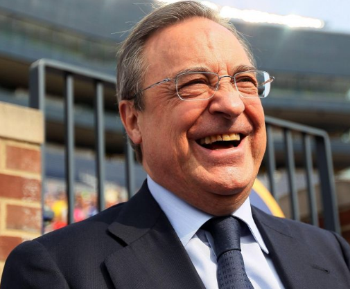
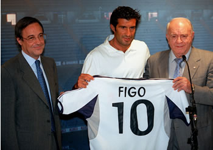
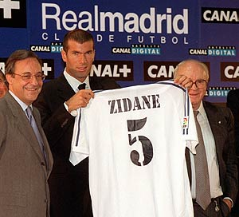
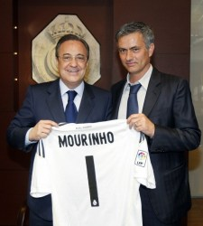
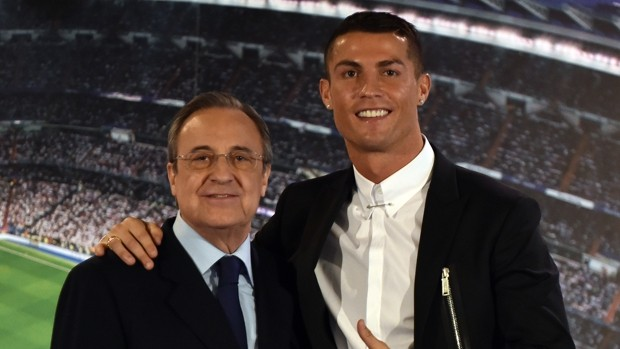
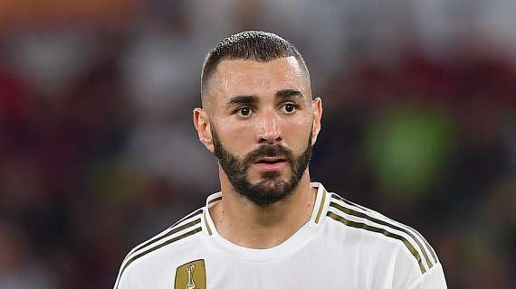

FLORENTINO PÉREZ
Real Madrid
Es el presidente del grupo ACS y del Real Madrid Club de Fútbol
Realizó grandes fichajes en su dos etapas como mandatario del club
<
Luis Figo
Procedente del Barcelona
Zinedine Zidane
Procedente de la Juventus
Jose Mourinho
Procedente del Inter de Milan
Cristiano Ronaldo
Procedente del Manchester
Karim Benzema
Procendente del Lyon
ACS
Abandonó en 2016 su puesto como CEO en ACS, aunque sigue siendo presidente de la compañía, fundó la empresa con mucho esfuerzo y dificultades hasta convertirla en una multinacional